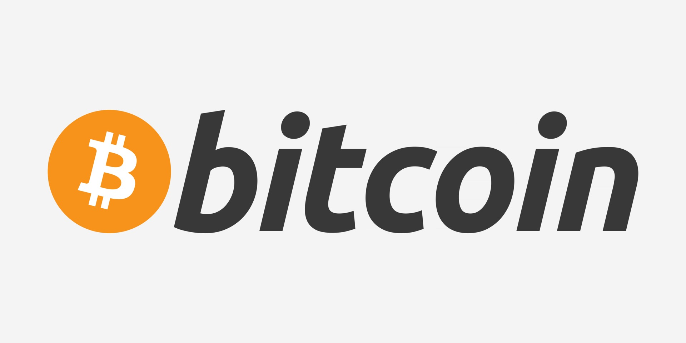

|  | Saiba tudo sobre Bitcoin |
| Início | História | Informações Técnicas | Ideologia | Economia | Críticas |
Bitcoin (símbolo: ₿; abreviado ISO 4217: BTC ou XBT) é uma criptomoeda livre e descentralizada, um dinheiro eletrônico para transações financeiras ponto a ponto (sem intermediários), com primeira citação no artigo descrevendo a implementação em 2008, mas apresentado no começo de 2009 na lista de discussão The Cryptography Mailing por um programador ou grupo de programadores sob o pseudônimo Satoshi Nakamoto.
Bitcoin é considerada a primeira moeda digital mundial descentralizada,constituindo um sistema econômico alternativo, e responsável pelo ressurgimento do sistema bancário livre.
As transações financeiras sem intermediários, são verificadas por todos usuários (ou nós do sistema descentralizado), que são gravadas em um banco de dados distribuídos chamado blockchain, uma estrutura sem uma entidade administradora central, o que torna inviável qualquer autoridade financeira ou governamental manipular a emissão e o valor da criptomoeda ou induzir a inflação com a produção de mais dinheiro.
No entanto, grandes movimentos especulativos de oferta e demanda influenciam na oscilação de seu valor no mercado de câmbio, sendo definido livremente durante as 24 horas do dia.
No âmbito financeiro e contabilístico internacional, semelhante ao ouro, o Bitcoin pode ser enquadrado em alguns termos: ativo especulativo (bem material), dinheiro commodity (mercadoria) e unidade de conta (bem de troca) - por ser empregado como meio de troca e por possuir uma escassez relativa além de cotação própria - que agregada à abreviatura XBT enquadrar-se na ISO 4217, código que representa moedas correntes.
O artigo descrevendo o funcionamento do bitcoin foi publicado em 2008 por Satoshi Nakamoto,pseudônimo de um programador ou grupo de programadores anônimo(s). Uma versão inicial do software foi lançada em 2009. Até 2012, a moeda era usada principalmente em mercados negros virtuais, tais quais o Silk Road. Desde 2013, o uso e a cotação da moeda perante o dólar tem aumentado significativamente, com o valor máximo histórico sendo registrado a 10 de novembro de 2021, a 68643,10 dólares por bitcoin.
A cotação tem sofrido alta instabilidade, devido, entre outros fatores, a ataques contra bolsas de câmbio virtuais.
De dezembro de 2017 a fevereiro de 2018, o valor do bitcoin caiu 70%, por exemplo.
A unidade de conta do sistema Bitcoin é o "bitcoin". Os símbolos usados para representar o bitcoin são BTC, XBT e BitcoinSign.svg.
Pequenas quantidades de bitcoin usadas como unidades alternativas são: milibitcoin (mBTC), microbitcoin (µBTC) e satoshi (nomeado em homenagem ao criador do bitcoin).
Satoshi, é a menor quantidade do sistema, representando 0,00000001 bitcoin, um centésimo de milionésimo de bitcoin;
Milibitcoin, equivale a 0,001 bitcoin, valor de um milésimo de bitcoin;
Microbitcoin, equivale a 0,000001 bitcoin, valor de um milionésimo de bitcoin. É chamado também de um bit.
Em 7 de outubro de 2014, a Fundação Bitcoin divulgou um plano para inscrever o bitcoin no padrão internacional de moedas ISO 4217, e mencionou o BTC e XBT como os candidados principais.
Satoshi Nakamoto declarou em seu livro branco que: "O problema básico com moedas convencionais é toda a confiança necessária para fazê-las funcionar.
O banco central deve ser confiável para não desvalorizar a moeda, mas a história das moedas fiduciárias está cheia de violações dessa confiança.
Bitcoin é uma das primeiras implementações do conceito criptomoeda descentralizada, descrito originalmente em 1998 por Wei Dai na lista de discussões Cypherpunk.
Em 2010, a economia de Bitcoin ainda era pequena comparada ao sistema financeiro tradicional e o software oficial ainda estava no estágio beta.
Entretanto, em diversas partes do mundo serviços e bens reais (como músicas, eletrônicos, veículos, hospedagens, restaurantes e desenvolvimento de software) já vinham sendo negociadas com essa moeda, sendo aceita tanto para serviços online quanto para bens tangíveis.
Em 2017, de acordo com um estudo da Universidade de Cambridge, havia entre 2,9 e 5,8 milhões de detentores únicos de carteiras de criptomoedas, a maioria detendo carteiras de bitcoin. O número mostra um aumento significativo desde 2013, quando haviam de 300 mil a 1,3 milhões de usuários.
Críticas ao Bitcoin são uma constante desde o início de sua adoção, e o embasamento para as mesmas varia entre episódios reais, projeções de mercado e falhas de design. Entre os críticos de Bitcoin encontram-se ex-usuários, tecnólogos, economistas e políticos.
Embora muitos considerem o Bitcoin uma moeda segura por causa de sua encriptação ponta-a-ponta, os riscos aos quais os usuários estão expostos fora da rede são o foco do problema.
Uma vez que o acesso aos fundos de uma conta dependem unicamente da posse de uma chave secreta, os fundos de carteiras online podem ser hackeados, e os fundos de carteiras offline compartilham as mesmas inseguranças de dinheiro em espécie e obrigações ao portador (títulos de crédito).